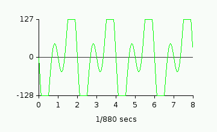
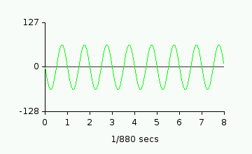

I have decided to include a very full description of sound, sound reproduction,
how sound is generated digitally, and how digital audio is mixed, so that people
can gain a full understanding of digital audio mixing in general, and HivelyTrackers
"mix gain" and "autogain" features specifically. It starts off really basic, as in
school science class, so most people will probably want to skip to the last parts.
1. Sound and sound reproduction
Sound is the compression and decompression of air, which creates a "sound wave". As
a sound wave passes a point in space, the pressure of the air at this point
fluctuates. This is detected by small hairs in our ears that move in reaction to
this tiny fluctuation in air pressure.
Speakers create sound waves by moving a cone back and forth. When the cone moves
forwards, it pushes the air infront of it forwards, creating a slightly higher
pressure in the air immediately in front of it. This high pressure area dissipates
into the surrounding atmosphere as a sound wave. Similarily, when the cone moves
backwards, it creates a low pressure wave in front of the cone. If you move the cone
forwards and back at a steady rate, it creates a regular pattern of pressure moving
through the room. If the speaker is moving back and forth at a constant rate between
20 times a second and 20000 times a second, it creates a tone within the audible
spectrum (IE it can be heard by humans as a constant tone).
Sound waves are communicated to the speakers as a voltage. If the voltage across
the speaker terminals is constant, the speaker will be held at a constant position
(and you will hear silence since there are no pressure changes occuring). If you
increase the voltage across the terminals, the speaker cone will move one way. If
you reduce the voltage, the cone will move the other way. So, fluctuations in air
pressure are represented as fluctuations in voltage across the speaker terminals.
2. How computers create sound
Sound is stored and processed inside the computer as a list of numbers. Each number
corresponds to a position for the speaker cone. An eight bit sample uses one byte
per speaker position. A signed byte contains a number from -128 to 127. -128 might
mean that the speaker should be pulled fully back, and 127 might mean push it fully
forwards. The computer sends a sequence of these numbers through a digital to
analogue converter which turns them into a voltage, which is amplified and passed
to the speakers. The speed at which the computer sends numbers to the digital to
analogue converter is the sample rate. A 44.1Khz sample sends 44100 samples to each
speaker every second.
If you sent a sine wave to an 8-bit channel, with the peak values of 127 and -128,
with a wavelength of 1/440th of a second, you'd hear a loud tone at A-4. It would be
loud because the speaker is moving as far as possible (-127 to 128), and it would be
"A-4" because the frequency for A4 is 440Hz. On a graph, the signal looks like this:
3. Mixing sound
So, each speaker is sent a sequence of numbers representing a sound wave. But each
channel can only take one sequence of numbers; what if we want to play more than one
sounds at the same time in the same channel? We need to combine the sounds. All you
have to do is add the two signals together. Imagine we want to play a sine wave at
440Hz and another one at 880Hz at the same time. If they are at maximum volume,
it would look like this:
+
=

But theres a problem! The resulting wave has numbers greater than 127, and smaller
than -128. These numbers don't fit into the limits of the sound channel, and so
the wave is clipped (the flat lines at the top and bottom). The solution is to half
the volume of the source waveforms:
+

=
This works great! But there are a couple of downsides. Firstly, each individual sound is now
half the volume. Secondly, each sample is effectively a 7bit sample instead of an
8bit sample, so its quality isn't as good.
4. What does this mean for HivelyTracker?
HivelyTracker modules can have up to multiple 16 channels. The simplest way to have
16 channels is to add the sample data for each channel and divide by the number of
channels. The problem is, each extra channel you use degrades the overall sample
quality, and makes each channel quieter. Also, not all channels are going to be at
maximum volume all the time, so it may be possible to keep the channels slightly
louder before mixing. How much louder depends on the module.
Instead of this method, Hively gives you a "Mix Gain" control, to manually set the
volume of the channels when mixing. At "100", it keeps all the channels at the default
volume for replaying AHX songs with 100% stereo seperation (see next section).
You can set mix gain from 0% (silent) to 200% (twice as loud) to manually get the
best balance between audio quality and clipping. The "Autogain" button scans through
the entire module and calculates the highest setting for "Mix Gain" that doesn't
have any clipping.
5. Mix Gain vs. Stereo Seperation
By default HivelyTracker pans each channel to the left or to the right in the same
order as the Amiga sound chip (IE left, right, right, left). How far they are panned
depends on the "Stereo Seperation" setting in prefs. With stereo seperation at 100%,
for a 4 channel module, channels 1&4 only show up in the left channel, and channels
2&3 only show up in the right, and so each speaker-channel only has two waveforms
added together. With stereo seperation at 0%, both stereo-channels contain all four
module channels, and so could need a lower mix gain for the same module.
When you load an AHX module into HivelyTracker, the Mix Gain is set to a predefined
level depending on your "Default stereo seperation" setting:
Default Stereo Seperation
Mix Gain Preset
0% (mono)
73
25%
74
50%
79
75%
86
100%
100
HVL modules can have a variable number of channels, and each channel can be panned
independantly, and so instead of using this kind of preset, the "default stereo
seperation" value and mix gain value are saved with the module. When you load
the HVL module in, the "default stereo seperation" value of the module is used
instead of your own setting, so you hear the song how the author intended.
Back to index